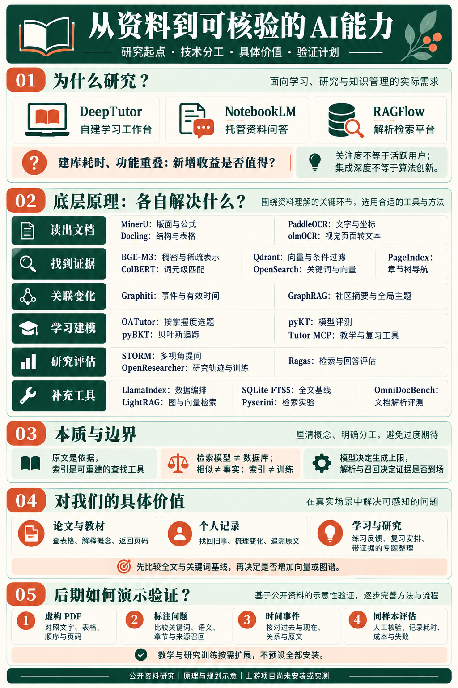

功能相似，不代表结果一样
DeepTutor 偏向自部署和扩展，NotebookLM 偏向托管使用，RAGFlow 偏向知识库工作流。问答、测验和音频可以相似，质量还受资料解析、模型和来源约束影响；Star 不能换算成长期用户。
从一份原始资料，到一个有依据的回答，中间发生了什么？
我们从 DeepTutor 出发，将注意力转向更底层的问题：解析有没有读对，检索有没有找对，时间和来源有没有保留下来。
研究起点是 DeepTutor：资料问答、讲题、练习与阅读看起来很丰富，但建库、模型配置和维护需要时间。我们想知道，这些投入是否提供了 NotebookLM 之外的实际收益。
DeepTutor 偏向自部署和扩展，NotebookLM 偏向托管使用，RAGFlow 偏向知识库工作流。问答、测验和音频可以相似，质量还受资料解析、模型和来源约束影响；Star 不能换算成长期用户。
常见建库是在提取内容、建立索引和保留来源；提问时找出相关证据再交给模型。短文可直接阅读，纯文本不必 OCR，图谱也可以省略。原文、索引、AI 生成物需要分开。
先检查论文表格有没有读对、旧记录能不能找回、历史状态有没有弄反，再比较成本。研究算法与自己运营完整产品是两种投入；只有样本显示出收益，才值得继续组合。
DeepTutor 的价值主要是系统集成与学习流程。值得继续研究的技术问题是结构保留、证据召回、关系与时间、学习者建模。算法创新、工程可靠性和日常好用是三个不同维度。
从建库是否值得，到26个对象的技术分工、具体场景与验证路线。

资料处理的价值，不止在于把内容“存进数据库”。真正困难的是：读对、找对，并且能回到原文核验。
01 / 05不同项目各自解决一部分问题。它们可以组合，也可以独立使用。
PDF、笔记、网页、图片与音频。原文是核验依据。
SOURCE识别文字、标题、表格和页面顺序，保留位置信息。
PARSE将内容组织为关键词、向量或章节树，方便查找。
INDEX找到相关片段，也可结合日期、来源或事件关系。
RETRIEVE模型依据材料回答，用户回到原文检查结论。
VERIFY不是所有资料都要经过全部步骤。 一篇短文可以直接交给模型；已有 Markdown 不必经过 PDF 解析；章节检索也不一定需要向量数据库。
数据库只是存取的一层。把文字识别出来、找出相似内容、抽取事实和解释问题，分别有不同错误，不能互相替代。
| 环节 | 真正做了什么 | 不能据此声称什么 |
|---|---|---|
| 解析 | 页面 → 文字、表格、章节、坐标；保留阅读顺序与定位。 | 读出文字不等于理解论点；OCR 也会遗漏、错行或识别错数值。 |
| 表示与索引 | 片段 → 关键词倒排、稀疏/稠密向量、章节树。 | 索引不是训练；向量是检索表示，不是可直接解释的完整知识。 |
| 召回与排序 | 问题 → 过滤候选、融合或重排 → 相关片段与来源。 | 相似不等于能回答；召回阶段找不到的证据，重排无法凭空补出。 |
| 关系与时间 | 记录 → 模型抽取的实体、关系、有效时间及原始依据。 | 关系是待核验的提取结果；新旧记录可能是补充、不同对象或观点变化。 |
| 生成与业务 | 问题 + 证据 + 上下文 → 解释、总结、练习或报告。 | 强模型不能恢复漏掉的原文；引用存在也不证明解释正确。 |
| 教学状态 | 题目技能映射 + 作答历史 → 掌握概率与后续活动。 | 预测答对不等于真实理解；生成题目不等于验证学习收益。 |
原文与索引分离；索引重建保留旧版本；原文和回答并排核对；选区改写有对比与撤销；AI 记忆可查看、纠正并追溯依据。它们能改善控制与恢复，但不直接证明算法更准确。
库是实现的集合，算法才是需要拆开的研究对象。以下为原理简化；具体引擎、模型与版本会改变输出。
计算过程：有文本层的 PDF 可以提取字符与坐标；扫描页需要文字检测/识别；版面模型帮助恢复标题、表格与顺序；视觉语言模型也可直接生成结构文本。输出都需要对照原页。
容易混淆：MinerU、Docling、PaddleOCR 不是各自固定的一种算法。Docling 有 VLM 流程；MinerU 提供不同解析档位和模型配置；PaddleOCR 包含 OCR、结构和 VL 路线。比较时必须写明模式。
研究问题：表格行列、公式和中文多栏顺序，哪个阶段丢失？更复杂的模型是否减少错误，还是只增加等待？
资料依据：MinerU · Docling VLM · PaddleOCR-VL。2026-10-28核对，实验版本待锁定。
计算过程：固定长度按字符或词元切片，可设置重叠；结构分块按标题、段落和表格组织，并在长度限制内拆分/合并。标题、表头和来源作为上下文随块保存。
失败例：“条件：仅限离线”与对应方案被切到两块，命中方案后仍可能答错条件。重叠会增加索引体积，过大的块又可能混入无关信息。
研究问题：固定解析结果和模型，只改变块大小、重叠或结构策略，检查证据完整性、召回与空间代价。父子块可以分开定位与补回上下文，但需要保留映射。
资料依据：Docling 分块与元数据。父子块为候选设计，未复现。
计算过程：多路召回可以按排名融合；RRF 将各路排名转换成贡献再求和，未进入某一路候选的项在该路不贡献。交叉编码重排则把问题与候选一起输入模型重新打分。
RRF 简化：score(d) = Σᵣ 1 / (c + rankᵣ(d))
区别：融合不是简单相加不同模型的原始相似度；重排需要额外计算，只能重排送来的候选，不能补回完全遗漏的证据。ColBERT 的后期交互与交叉编码是不同机制。
研究问题：固定候选池，对比是否重排；固定各路配置，对比单路与融合。另记候选数、融合参数、延迟和费用。
资料依据：Qdrant 融合查询 · BAAI 重排模型说明。模型卡仅用于解释机制，未扩大本轮安装范围。
计算过程：从事件抽取实体与关系，保留原始事件、有效时间和入库时间，再查询关系。新记录可能补充、改变或纠正旧关系，不能仅按导入顺序覆盖。
失败例：先导入五月“恢复”，后补三月“暂停”；最新导入并不是最新发生。同名实体、否定和矛盾抽取都可能让关系失效判断出错。
研究问题：日期筛选能否回答？增加 Graphiti 后是否更好表达状态变化？GraphRAG 的社区摘要更关注整体主题，两者应分别设题。
资料依据：Graphiti · GraphRAG 全局查询。关系是待核验的提取结果。
业务目标同样会决定技术设计：教学中的技能估计、选题和反馈属于决策逻辑，不能只当作展示样式。生成、检索、状态更新和界面应分别评价。
两种应用有大量重叠，而决定结果的能力分布在多个层次。
先看它解决什么，再看它的价值与代价。不同层的项目不应直接当作竞品。
下面的输入与输出用于说明工作方式，不是实际运行结果，也不是性能排名。
输入：包含双栏、公式和表格的 PDF。
侧重复杂文档解析，输出 Markdown、表格、公式及布局信息。适合关注中文论文和扫描内容的处理流程。
强调版面、OCR、表格等分阶段处理及统一文档结构。适合研究段落、章节与位置如何保留。
两者都可能漏字或错表格；应对同一份 PDF 比较内容完整性、阅读顺序与页码，而不是根据名称判断谁更好。
输入：一组文字记录和一个自然语言问题。
将问题和文本转换为检索表示，帮助判断不同说法是否相关。输出是向量等表示，不是事实结论。
保存和搜索已有向量及日期、来源等字段。输出是符合条件的候选记录，不自行创建内容含义。
两者可组合使用，也可分别替换。只装数据库并不会自动获得高质量语义理解。
输入：章节明确的长报告和一个具体问题。
利用章节树，让模型选择相关节点与页面。输出是拟查看的章节或页码；价值是保留文档层次。
以语义相似度查找片段，输出候选片段。价值是可以跨文档查找不同表述，但片段需保留上下文。
章节结构差会影响导航；向量相似也不保证证据正确。具体延迟、成本和准确率需要同样本测试。
输入：多个日期的项目记录，或大量分散文档。
组织事件、实体、关系及有效时间，便于研究状态如何变化；提取事实应能回到原始记录。
抽取实体关系、聚合社区摘要，侧重研究大量资料有哪些整体主题及关联。
关系抽取仍依赖模型，可能漏掉或误判；建图有处理成本。GraphRAG 官方目前以维护为主。
输入：教材或文档；输出：资料问答、摘要或练习。
开源、自行部署，可选模型与检索引擎；有学习流程与记忆，但配置和维护需要时间。
Google 托管，现名 Gemini Notebook，上传资料即可使用；提供引用、测验与多媒体成果。
如果现有工具已满足问答与整理需求，额外部署不一定值得；想研究和改造底层时，开源更灵活。
输入：同一份带表格的扫描页面。
按具体模式比较文字提取、结构保留和资源代价；MinerU、Docling、PaddleOCR 都可能包含多种路线。
比较页面生成的遗漏、顺序和表格关系；视觉模型不保证无幻觉，也不代表其他库不能采用 VLM。
以同一页核对漏字、表格关系和顺序，判断更复杂的模型是否值得额外耗时和算力。
输入：标注来源的中文检索问题。
组合关键词和向量等方式寻找候选资料；中文分词和融合设置会影响结果。
评估检索上下文与回答，例如依据覆盖和忠实度；它不负责替代搜索引擎。
把“找得准不准”变成可核验的问题；自动评分须配合人工检查来源。
输入：虚构的题目、技能和答题记录。
组织辅导与学习活动；OATutor 提供结构化练习，Tutor MCP 将教学策略提供给兼容助手。
前者实现贝叶斯知识追踪，后者提供不同知识追踪模型的评测工具。
区分出题展示和学习状态建模；概率或答题预测并不能证明学习者真正理解。
输入：研究主题与资料来源。
以多视角提问、搜索、整理大纲和引用组织研究工作流。
研究多轮研究轨迹的合成、训练和评估，关注模型如何习得研究能力。
区分编排已有模型与研究模型训练；后者算力和复现门槛更高。
浏览全部项目 · 基于公开资料，未实测
跨层对象可以比较分工，不能据此当成强弱排名；这里整理描述，不运行上游项目。
把复杂文档读出来
识别版面、OCR、公式和表格，输出 Markdown 或结构化内容。尤其适合研究 PDF 如何保留阅读顺序。
解析工具 · 资料整理 · 未实测
文档不是一长串文字
可用标准流程组合版面、OCR和表格识别，也可选VLM流程，输出统一文档结构与来源位置。
文档处理工具 · 资料整理 · 未实测
从图像识别到结构化文档
提供文字检测与识别，也包含版面、表格及视觉语言模型方案，可研究截图、扫描件与页面定位。
OCR / 文档工具 · 资料整理 · 未实测
让不同说法能够相遇
将问题和文本转换为用于比较的表示，支持稠密、稀疏和多向量等检索方式。
检索模型 · 资料整理 · 未实测
保存并查找检索表示
存储向量与附加信息，支持语义搜索与日期、来源等条件过滤，也支持混合检索。
向量数据库 · 资料整理 · 未实测
更细粒度地匹配文本
保留问题与文档的词元级表示，使用后期交互计算更细致的相关性。
词元级检索模型 · 资料整理 · 未实测
借助章节结构定位
为文档建立章节树，让模型结合问题选择相关节点和页面；不一定需要向量数据库。
章节导航工具 · 资料整理 · 未实测
为变化保留时间与来源
围绕原始事件、实体与关系组织时序知识图谱，记录关系的有效时间并支持混合检索。
时间知识图谱 · 资料整理 · 未实测
从关系看整体主题
抽取实体关系、形成社区摘要，通过局部或全局检索理解大量资料中的主题。
图检索工具 · 资料整理 · 未实测
把文档处理和检索连接起来
完整知识库系统。DeepDoc 包含 OCR、版面分析与表格结构识别，后续连接分块和检索。
知识库应用 · 资料整理 · 未实测
学习者掌握了什么？
利用题目与知识点映射、答题记录及贝叶斯知识追踪估计掌握状态，辅助安排练习。
自适应教学系统 · 资料整理 · 未实测
比较知识追踪模型
提供学习交互数据处理与模型评测工具，用历史行为预测之后的答题表现。
知识追踪研究工具 · 资料整理 · 未实测
先提出好问题，再写作
围绕主题发现不同视角、模拟提问与追问，再收集资料、形成大纲和带引用文章。
研究工作流 · 资料整理 · 未实测
用视觉模型读取 PDF 页面
将页面图像送入文档视觉语言模型，转换为带阅读顺序的文本，研究复杂版面、表格和公式。
视觉解析工具 · 资料整理 · 未实测
结合关键词与向量检索
搜索引擎可融合关键词与语义结果，结合结构化过滤；关键词路线依赖文本分析和分词配置。
搜索引擎 · 资料整理 · 未实测
估计技能掌握的概率
实现贝叶斯知识追踪及其扩展，用历史作答更新技能掌握概率，并考虑猜对和失误等因素。
知识追踪模型库 · 资料整理 · 未实测
把教学策略提供给助手
通过 MCP 提供学习流程，结合知识追踪、间隔复习和先修关系安排活动，由模型参与讲解。
教学工具服务 · 资料整理 · 未实测
研究模型如何学会多轮研究
公开长程研究轨迹合成、训练与评估流程，探索模型如何逐步搜索、推理和组织结果。
模型训练研究 · 资料整理 · 未实测
评估检索依据与回答
提供检索上下文召回、回答是否被材料支持等评估方法，辅助比较不同系统设置。
评估框架 · 资料整理 · 未实测
连接模块，研究如何替换
连接器、文档节点、索引、检索器与模型构成可组合的数据应用。
开发框架 · 资料整理 · 未实测
图与向量相互补充
用模型抽取实体关系，组织图结构与向量等检索上下文。
图检索框架 · 资料整理 · 未实测
先建立本地关键词基线
通过倒排全文索引查找词项，提供排序、匹配片段等能力。
全文索引扩展 · 资料整理 · 未实测
让方法比较可复现
围绕检索索引与评测组织稀疏、稠密和混合检索实验。
检索实验工具 · 资料整理 · 未实测
把文档错误分项看清
用标注样本和评测方法检查文字、表格、公式与顺序等输出。
解析评测数据与工具 · 资料整理 · 未实测
观察完整学习工作流
把资料检索、模型和工具组织为问答、练习、阅读与学习记忆。
开源学习应用 · 资料整理 · 未实测
评估便捷使用的价值
Google 托管的资料学习产品，现名 Gemini Notebook，围绕来源组织问答与成果。
托管产品对照 · 资料整理 · 未实测
没有找到匹配的项目。试试其他名称或选择“全部对象”。
用同样本结果决定投入，不预设复杂架构必然更好。这里是选型条件，具体效果尚待实测。
| 我们的任务 | 先做什么 | 何时考虑扩展 | 候选与代价 |
|---|---|---|---|
| 论文与教材 | 有文字层先提取；短文先直接阅读并定位来源。 | 扫描、多栏、公式或表格经常漏读时，测试结构解析。 | MinerU / Docling / PaddleOCR / olmOCR；记录具体模式与设备。 |
| 找回旧记录 | 日期、项目与中文关键词检索。 | 不同说法反复漏召回时，测试语义或混合检索。 | BGE-M3 / ColBERT；Qdrant / OpenSearch 按索引需求选择，另有存储和服务维护。 |
| 长报告定位 | 目录和全文查找，保留章节与页码。 | 问题需要沿文档层次追踪时，对照章节导航。 | PageIndex；比较导航成本、延迟与错页。 |
| 历史状态与主题 | 按日期筛选原文，直接归纳并核查。 | 关系与状态变化难表达，或需要跨文档整体主题时分别设题。 | Graphiti / GraphRAG / LightRAG；增加抽取、纠错和更新成本。 |
| 学习与研究 | 人工标注技能或研究问题，用可追溯资料组织反馈。 | 需要掌握估计、选题或多视角研究时再接业务模型。 | OATutor / pyBKT / pyKT / Tutor MCP / STORM；训练研究另看 OpenResearcher 的条件。 |
| 完整日常工具 | 先比较现有托管体验和最小本地方案。 | 需要改造、可控流程或专用能力，且收益值得维护时。 | DeepTutor / RAGFlow / LlamaIndex；导入成本、模型费用与日常维护分别记录。 |
来源定位和统一数据字段、可替换的解析/检索接口、可重建索引、可审查的生成记录，以及同样本评估方法。它们能服务多个业务界面，避免把业务展示与数据处理绑死。
以下是未来可以验证的能力方向。不是当前页面已经连接的系统，也不默认需要把全部库装起来。
任务：“这张表的条件是什么？与上一章有什么不同？”
候选：MinerU / Docling 读结构，BGE-M3 或 PageIndex 定位，再用模型解释。
价值：减少反复翻页，保留表格上下文与页码；先以全文阅读作对照。
任务：“我什么时候改变了对项目 A 的看法？”
候选：日期与关键词基线 → 语义查找 → 有需要再试 Graphiti。
价值：找到前后原话，区分当时观点与当前状态；先只使用虚构记录验证。
任务：“这批项目记录里的常见阻碍有哪些？”
候选：按日期/项目筛选和直接归纳作基线；GraphRAG / LightRAG 作扩展。
价值：把零散线索组织成可追溯主题；相关共现不能自动当作因果。
任务：“以前处理同类问题有哪些成功方法？”
候选：混合检索找原始案例，人工审核总结，保存来源和适用条件。
价值：支持后续沉淀提示词、操作步骤与知识卡；资料提炼到可执行工具还需额外设计。
任务：“应该再练哪类题，而不只是生成更多题？”
候选：OATutor / pyBKT / pyKT / Tutor MCP，配合结构化技能和答题记录。
价值：学习状态与讲解分工；模型参数、评分及真实学习收益要分开验证。
任务：“我遗漏了哪些问题？结论相互矛盾吗？”
候选：STORM 组织提问与资料；Ragas 辅助检查，人工逐条核对。
价值：辅助发现问题而非只扩写答案；OpenResearcher 的训练另属高投入研究。
下面是我们编写的虚构页面与人工答案。没有调用解析器、检索模型或图谱；候选结果和相似度尚未生成。
P1 · 表1：方案甲的条件为“仅离线、100份以内”，采用关键词与人工审校；方案乙的条件为“超过100份、需要跨说法查找”，拟评估语义检索。数字仅为虚构手册内容。
P2 · E1：3月1日，项目 A 因接口问题暂停；6月10日导入。
P2 · E2：5月1日，接口修复，项目 A 恢复；6月1日先导入。
P3 · E3：5月2日，项目 B 仍暂停，不能据项目 A 恢复推断 B 也恢复。材料未给出预算金额。
| 问题 | 人工标注的依据 | 希望暴露的错误 |
|---|---|---|
| Q1：方案甲的适用条件？ | P1 · 表1 · 方案甲行：仅离线、100份以内。 | 丢表头、错行或块缺条件。 |
| Q2：项目 A 为何一度搁置？ | P2 · E1：接口问题。“搁置”为同义问法。 | 只按字面匹配漏召回。 |
| Q3：截至3月15日 A 的状态？ | P2 · E1：暂停；不使用五月事件倒填三月。 | 把最新状态用于历史问题。 |
| Q4：截至5月2日 A 的状态？ | P2 · E2：恢复；导入先后不改变事件先后。 | 乱序导入覆盖当前状态。 |
| Q5：B 也恢复了吗？ | P3 · E3：仍暂停。 | 混淆对象、忽视否定。 |
| Q6：项目预算是多少？ | 无答案；人工标注为不应编造。 | 无依据补全与错误引用。 |
材料版本：scenario-v1。页号为手工材料定位，不是已解析的 PDF；后续由同一内容生成文字版和扫描版，保存文件哈希后开展解析实验。小样例用于发现问题，不能证明普遍效果。
先用少量虚构资料验证关键环节，观察输入与输出，不追求一次搭建完整系统。
我认为项目 A 暂时无法推进。
接口问题解决，项目 A 恢复推进。
用 MinerU 对照原始页面，检查漏字、阅读顺序与位置；已有文本可直接读取。
计划中 · 未安装 / 未运行用 BGE-M3 比较不同说法与原文的相关性，并与关键词检索基线对照。
计划中 · 不是性能结论用 Graphiti 研究事件时间、状态变化与来源；检查是否把推断当作事实。
计划中 · 需人工核验以下都是未执行的规划；先用虚构样本、手工标注标准来源，再决定是否实现。不是每个项目都需要安装。
项目：MinerU、Docling、PaddleOCR；按资源情况再看 olmOCR。
输入：虚构文字版与扫描版 PDF，包含双栏、表格和页码。
核验：人工对照漏字、阅读顺序、单元格关系和页码，记录解析时间与设备配置。
项目：BGE-M3、ColBERT、Qdrant、OpenSearch、PageIndex，按需分组比较。
输入：同义提问、准确日期、人名和无答案问题；对照直接阅读与中文关键词基线。
核验：记录标注来源是否召回、排序、引用和无依据时的表现，以及耗时、模型与分词设置。
项目：Graphiti 研究事件时间与状态变化；GraphRAG 研究跨文档的整体主题。
输入：虚构的暂停、恢复及相互关联记录，分别标注事件时间和导入时间。
核验：逐条检查事实、关系、时间和原文来源；避免把两种图谱当成同一任务。
项目：Ragas 与人工核验。
输入：相同问题、标注依据、检索结果和回答。
核验：分别查看依据召回与回答是否受依据支持；自动分数需与人工结果对照，忠实不等于来源真实。
项目：OATutor、pyBKT、pyKT、Tutor MCP；STORM、OpenResearcher。
输入：虚构作答和知识点，或一份公开主题资料。
核验：观察掌握估计、选题依据和来源追溯；模型训练研究先阅读方法与算力需求，不预设复现。
项目：DeepTutor、RAGFlow；NotebookLM 作为托管产品参照。
输入：与底层实验相同的公开或虚构资料。
核验：比较导入、配置、来源核查及维护成本；不同工具模型和处理条件必须记录，不能据此直接断言整体胜负。
所有结果在实际运行后才填写，报告样本、版本、设备、模型及限制。正式资料和编辑缓存不作为测试样本。
先锁定材料与人工参照，再记录每次改变。可下载样例和空记录模板；所有效果字段在实际运行后填写。
| 实验 | 固定条件与改变项 | 观察与完成条件 |
|---|---|---|
| P1 · 解析 | 同内容文字版/扫描版、页码和人工结构；每次只比较明确的解析器/模式。 | 逐页核对文字、表格、顺序和出处，列出错误；记录设备、模型和首次/重复耗时。PDF生成与解析均待执行。 |
| P2 · 检索 | 固定已核对文本、问题、来源标注及过滤；先比较中文关键词与一种语义模型。再分别改变分块、融合或重排。 | 记录 Recall@k、首条相关证据排名或 MRR、丢失原因；无答案题单独评估。对章节方法保留页级标注，不把块级与页级结果直接混算。 |
| P3 · 时间与更新 | 固定 E1/E2/E3；比较日期筛选与时间关系；交换导入顺序，再补充一条明确更正。 | Q3/Q4/Q5 均能回原文解释；检查更正/删除后的索引、关系和旧回答如何标记失效。任何错误都进入案例表。 |
| P4 · 最终回答 | 固定生成模型/版本、提示、证据预算；分别使用直接阅读与检索证据。记录服务条件差异。 | 逐题核对答案、引用、时间、对象与无答案行为；Ragas 可辅助，人工核验为最终依据。全部题有输出、来源和失败说明才算该轮完成。 |
首次导入：解析、表示、建索引；增量更新：新增/更正/删除和重建；查询：召回、重排与生成延迟；另记存储、模型调用和维护步骤。冷启动与缓存命中分开。
保存数据哈希、目标版本、模式、模型、设备、分词/分块、top-k、提示和索引版本。记录许可入口；凭据不进入记录。版本与硬件尚未选定，不填写猜测值。
能解释新增模块解决了哪些基线错误，以及新增代价；先针对错误扩样，再考虑应用集成。一次小样本通过，不据此宣布通用优势或真实学习收益。
同一批样本、同一组问题，再观察输出。漂亮的展示和项目热度不是效果证明。
对照原文检查漏字、表格关系、日期、公式和阅读顺序。
检查相关记录是否被召回，关键词和语义检索各自错在哪里。
确认回答能回到具体来源；资料没有答案时允许明确说不知道。
记录处理时间、模型调用、索引空间与维护负担，结合使用场景判断。
保留原始资料与上下文，用可以核查的证据理解每一步。复杂方案只有在解决具体问题时才有价值。